Diferenciación e integración numérica
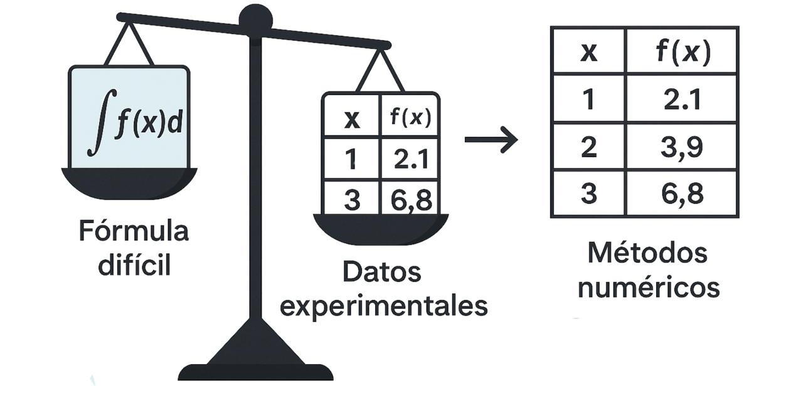Son técnicas utilizadas en análisis numérico que nos permiten la aproximación de las integrales y derivadas cuando tenemos funciones complejas y no son posibles obtenerlas de forma analítica.
Son utilices para:
- Cuando las funciones no poseen una derivada o integral explícita.
- Se trabaja con datos experimentales en lugar de funciones definida.
Importancia en la ingeniería.
La diferenciación e integración numérica son como aliados indispensables en el mundo de la ingeniería. Nos ayudan a resolver problemas del día a día cuando las soluciones exactas son inalcanzables o demasiado complejas de calcular. Además, su aplicación no solo hace que los resultados sean más precisos, sino que también ayuda a tomar decisiones bien fundamentadas en proyectos de ingeniería complejos.
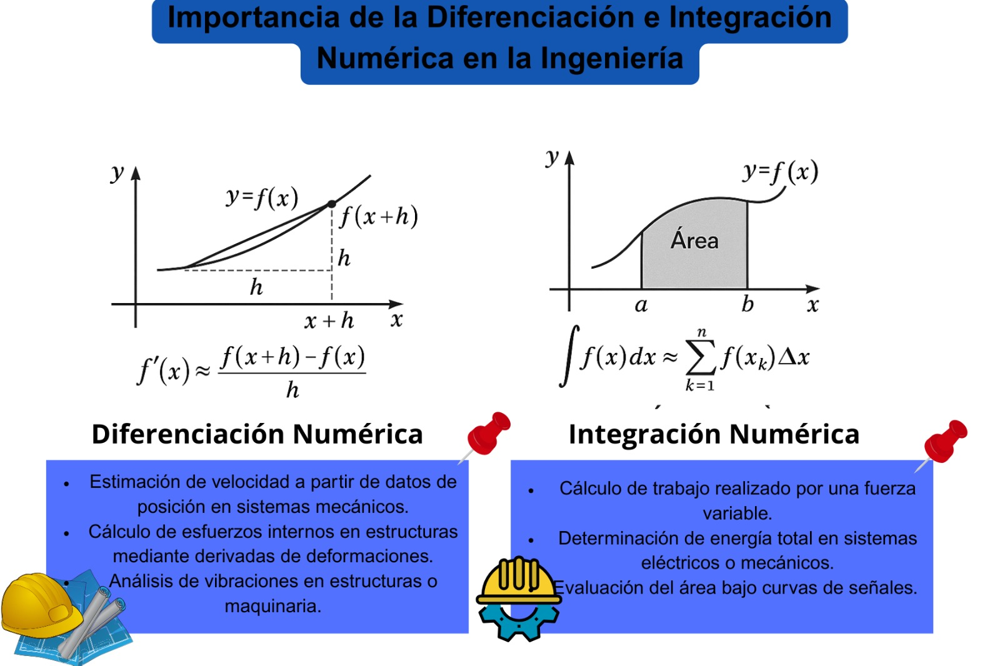Derivadas Finitas
La diferenciación numérica es una técnica que nos ayuda a estimar la derivada de una función de una manera más práctica y tangible. En vez de trabajar con símbolos y ecuaciones complejas, como se hace en el cálculo tradicional, utilizamos fórmulas que se basan en las diferencias entre puntos que están muy cerca uno del otro.
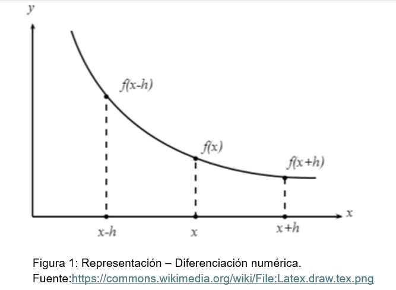Puede calcularse usando la fórmula de definición de derivada:
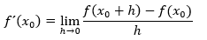
Donde h, representa el tamaño del paso o la distancia entre dos puntos en el eje x. Determina que tan cerca están los puntos usados para calcular la derivada.
- Si h es muy grande puede producir un valor muy inexacto
- Si h es muy pequeño mejora la precisión, se puede decir que, h debe ser suficientemente pequeño para capturar cambios, pero no tan pequeño porque puede generar errores computaciones.
Existen distintos esquemas: hacia adelante, hacia atrás y centrado. Cada uno tiene ventajas dependiendo de si estamos en el borde de un conjunto de datos o en el interior.
Fórmulas para derivada de primer orden:
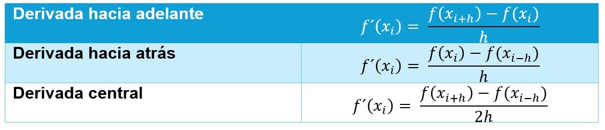Derivada Hacia Adelante
Se utiliza cuando tienes datos del punto actual y del siguiente, es útil a inicio de un conjunto de datos. Tiene menor precisión que la derivada centrada.
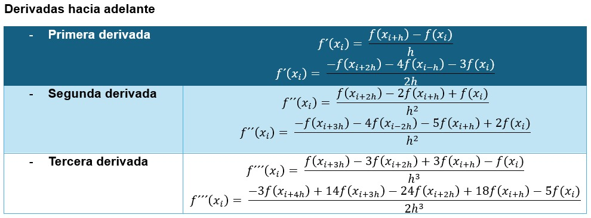Derivada Hacia Atrás
Se utiliza cuando tienes datos del punto actual y del anterior, es útil al final de un conjunto de datos. Tiene menor precisión que la derivada centrada.
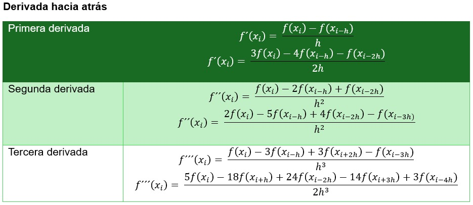Derivada Centrada
Se utiliza cuando se tiene datos antes y después del punto de interés, es indispensable para puntos interiores de una tabla de datos. Se considera la más precisa de las tres (menor error
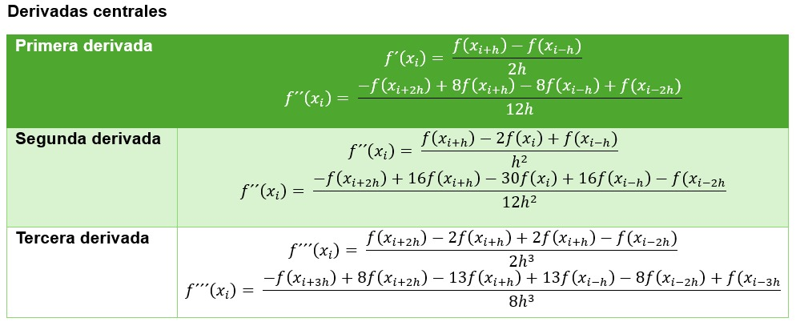Ejemplo
Estudiamos un objeto en caída libre, cuya posición en función del tiempo está dada por la ecuación:
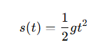Donde g es la velocidad de la gravedad
Estimar la velocidad del objeto en 𝑡 = 2.0 segundos utilizando tres métodos de derivación numérica con un paso de tiempo ℎ =0.1
Diferencia hacia adelante
Este método estima la derivada en un punto utilizando el valor del punto actual y el siguiente. Se basa en la fórmula:

Aplicando:
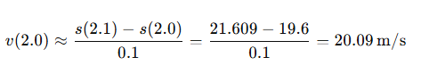Ventajas
- Es fácil de implementar.
- Solo requiere el punto actual y el siguiente.
Desventajas
- Es menos precisa que otros métodos.
- Puede generar errores si el paso de tiempo es muy grande.
Diferencia hacia atrás
Este método usa un punto anterior y uno posterior al punto de interés. Su fórmula es:
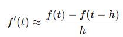Aplicando:
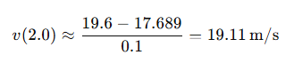Ventajas
- Útil cuando no se tienen datos futuros.
- Igual de simple que la anterior.
Desventajas
- Es menos precisa que otros métodos.
- Puede generar errores si el paso de tiempo es muy grande.
Diferencia centrada
Este método usa un punto anterior y uno posterior al punto de interés. Su fórmula es:
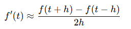Aplicando:
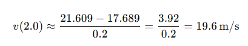Ventajas
- Es más precisa que los otros métodos.
- Utiliza datos antes y después del punto de interés.
Desventajas
- Es más compleja de implementar.
- Requiere más datos.
Interpretación Física y Conclusión
La derivada que estamos calculando es una estimación de la velocidad instantánea en un momento específico. En este caso, como la función de posición es exacta, la derivada real en 𝑡 = 2 es:
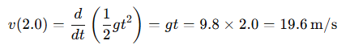Como vemos, el único método que da el valor exacto es la diferencia centrada, lo que confirma que es el método más preciso entre los tres.
Integración Numérica
Es un conjunto de métodos usado para calcular una aproximación del valor de una integral definida cuando no es posible resolverla de forma analítica.
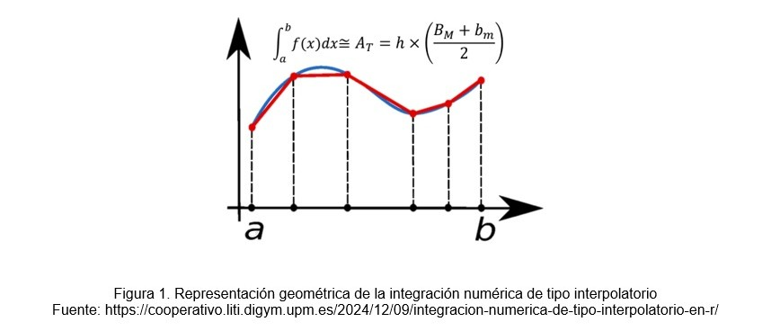Se utiliza cuando:
- La función no tiene una antiderivada elemental.
- Solo se tienen datos discretos de la función (por ejemplo, de una tabla o experimento).
- Se requiere una solución rápida en simulaciones computacionales.
Regla del Trapecio
Es una técnica de integración numérica que utiliza una aproximación lineal de la función en cada subintervalo.
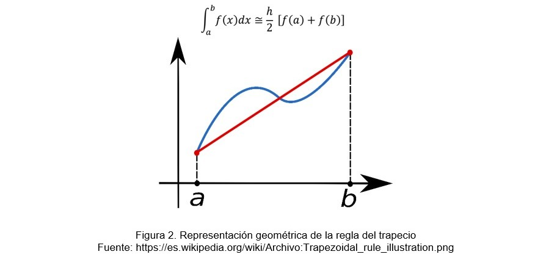Se obtiene calculado el área de un trapecio circunscrito debajo de la función f(x) entre los puntos x0=a y x1=b. En la cual:
- Función muy engorrosa de integrar.
- No posee anti-derivada
Ejemplo
Para demostrar lo fácil que resulta ser la regla del trapecio en la aproximación del valor de una integral, consideremos las integrales:
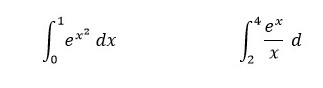Empezaremos encontrando el valor aproximado para la integral:
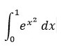
Donde tenemos que el limite inferior que llamaremos "a" es igual a 0, y el límite súperior que llamaremos "b" es igual a 1. Tendriamos entonces que:
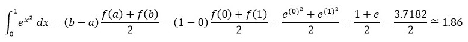Por tanto:
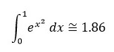Ahora, para la integral:
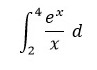Donde a es igual a 2, y b es igual a 4 obtenemos:
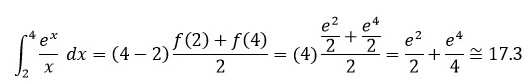Por tanto:
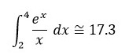Regla de Simpson
Es una técnica de integración numérica que utiliza una aproximación cuadrática de la función en cada subintervalo.
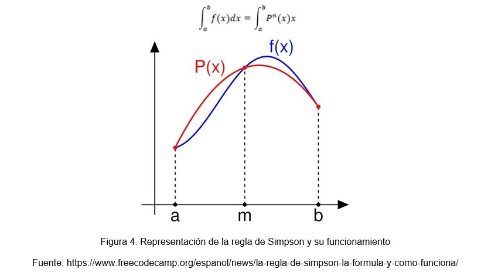La regla se Simpson se obtiene suponiendo el segundo polinomio de Lagrange. La regla de Simpson presenta con variación de la forma del polinomio la regla de Simpson 1/3 y 3/8. El primero se halla reemplazando en la formula anterior un polinomio de grado 2 y el segundo un polinomio de interpolación de grado 3.
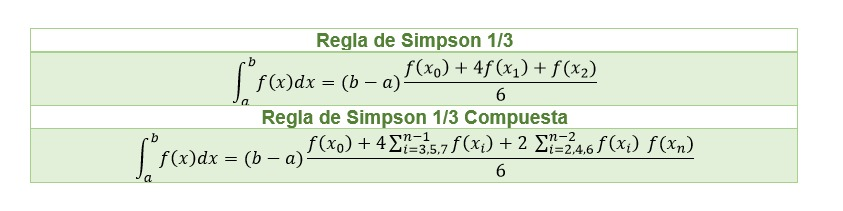Ejemplo
Aplicar la regla de Simpson para calcular el valor de la integral dada por:
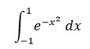Donde a es igual a -1 y b es igual a 1. Obtenemos:
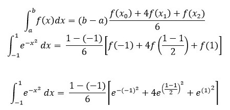 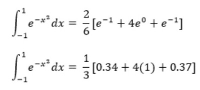Por tanto:
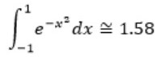Regla de Simpson 3/8
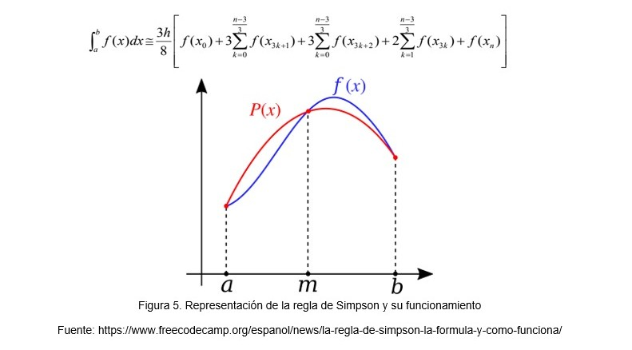Es un método de integración numérica que aproxima una integral definida utilizando un polinomio de grado 3 (cúbico) en cada grupo de tres subintervalos consecutivos. Lo cual nos lleva a las siguientes características:
- Alta precisión para funciones suaves.
- Aproxima usando polinomios cúbicos.
- Requiere que el número de subintervalos sea múltiplo de 3.
Ejemplo
Para calcular el valor aproximado de una integral por el método de simpson 3/8 se utiliza las siguientes fórmulas:
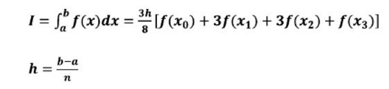Donde:
- a = 1
- b = 2
- n = 3
Obtemos
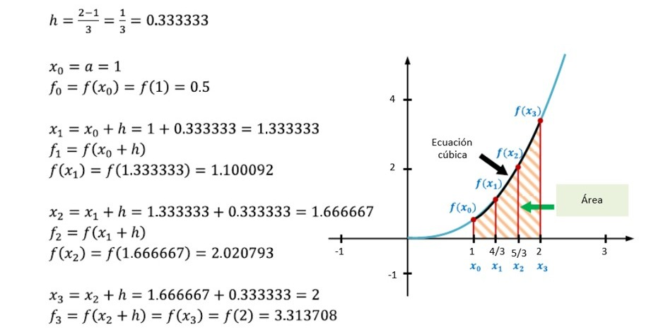Lo que se puede resumir en la siguiente tabla:
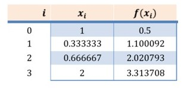Reemplazando en la fórmula nos queda que :

Caso 1: Energía por Vibraciones
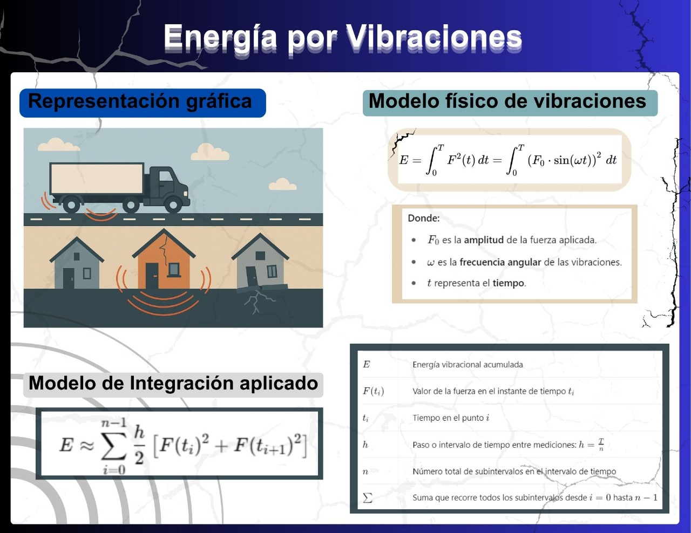Las vibraciones mecánicas generadas por el tránsito pesado en carreteras representan una fuente constante de perturbación para las edificaciones cercanas. En contextos urbanos y suburbanos, especialmente en zonas donde predominan viviendas construidas sin estudios geotécnicos detallados, la exposición prolongada a estas vibraciones puede producir efectos acumulativos no deseados, tales como micro fisuras, asentamientos diferenciales y degradación estructural progresiva. Este fenómeno ha sido documentado en múltiples estudios de ingeniería civil, donde se reconoce que incluso vibraciones de baja amplitud, si son repetitivas y persistentes, pueden generar daños estructurales relevantes a largo plazo.
En Colombia, muchas viviendas ubicadas cerca de vías de alto flujo vehicular no cuentan con mecanismos de aislamiento o refuerzo estructural adecuados, por lo que es fundamental encontrar métodos para evaluar el impacto de estas vibraciones y tomar decisiones basadas en evidencia.
Modelado físico de las vibraciones
Para representar matemáticamente la acción vibratoria sobre una estructura, se parte del análisis de la fuerza periódica ejercida por el paso constante de vehículos. Una forma común de modelar esta fuerza es mediante una función sinusoidal del tipo:
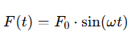Donde:
- F₀ es la amplitud de la fuerza.
- ω es la frecuencia angular de las vibraciones.
- t es el tiempo.
La energía mecánica que esta fuerza transmite a la estructura en un intervalo de tiempo [0,T] se puede estimar a través de la siguiente integral:
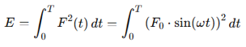Este modelo permite cuantificar la energía acumulada sobre la estructura, la cual se asocia directamente con el nivel de fatiga de los materiales. Mientras mayor sea esta energía, mayor será el daño potencial a la vivienda.
Método de integración numérica aplicado al problema
Cuando no se dispone de una solución analítica directa, o cuando los datos provienen de mediciones discretas (como ocurre en la realidad con sensores o registros de campo), es necesario utilizar métodos de integración numérica para aproximar el valor de la integral que representa la energía vibracional acumulada.
En este caso, se puede aplicar la regla del trapecio para aproximar la integral, recordemos que este método es de los más sencillos y eficientes para aproximar integrales definidas cuando:
- Se dispone de una función evaluable en puntos específicos.
- Se requiere una solución rápida y con aceptable precisión.
- Se desea un algoritmo fácil de implementar en lenguaje de programación.
Para nuestro caso obtendriamos que:
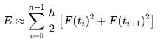Donde:
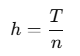Ejemplo Práctico
Un sistema mecánico sometido a vibraciones forzadas es modelado por una fuerza variable en el tiempo dada por la expresión:
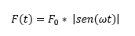Donde:
- F₀ es la amplitud de la fuerza.
- ω es la frecuencia angular de las vibraciones.
- t es el tiempo.
Se desea calcular la energía total acumulada por vibraciones en un intervalo de tiempo de T = 12 segundos, utilizando el método del trapecio con un paso de tiempo h=0.5 segundos.
Para resolver este problema, debemos dar solución a la siguiente integral definida:
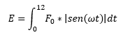- Reemplazamos los Valores en la integral . 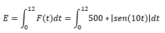
- Cálculamos el número de subintervalos n 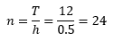
- Aplicamos la formúla del trapecio. 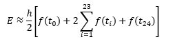
- Reemplazamos y obtenemos que: 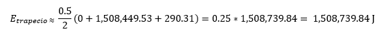
Donde:
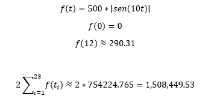Programa
En este apartado puedes ingresar los valores obtenidos en el campo y encontrar la aproximación de la acumulación de energía tanto por el método de trapecio, Simpson 1/3 y Simpson 3/8, teniedno als consideraciones que se describen más adelante
Una vez ingreses tus datos, haz clic en “Calcular Energía” para ver el resultado.
---
Comparación de Métodos
| Método | Energía (J) |
|---|---|
| Trapecio | – |
| Simpson 1/3 | – |
| Simpson 3/8 | – |
En la anterior tabla podemos verificar los valores obtenidos por al aplicar los otros métodos. Debemos recordar que:
- Trapecio: funciona con cualquier número de subintervalos n=T/h.
- Simpson 1/3: requiere que n sea par.
- Simpson 3/8: requiere que n sea múltipo de 3.
Además n debe ser un número entero. Por lo que si en la tabla no se arroja ningún dato, por favor revise que cumpla con las condiciones anteriores.
Aplicaciones e implicaciones prácticas del análisis
El uso de estos métodos para calcular la energía acumulada por vibraciones ofrece diversas ventajas:
- Diagnóstico estructural: Permite detectar zonas de una edificación que están recibiendo más energía vibracional y, por lo tanto, podrían requerir refuerzo estructural o mantenimiento preventivo.
- Diseño de soluciones urbanas: Esta información puede ser utilizada por autoridades locales para justificar la instalación de barreras antivibración, modificaciones en las rutas de tránsito pesado, o incluso reubicación de viviendas en riesgo.
- Normativas de construcción: Sirve como base para la creación o ajuste de reglamentos de construcción, especialmente en zonas urbanas densas donde la coexistencia entre viviendas y vías vehiculares es inevitable.
- Optimización del presupuesto: Al conocer con precisión qué zonas están más afectadas, se pueden destinar recursos de manera más eficiente, priorizando intervenciones donde realmente se necesita.
Conclusión
En conclusión, el uso de métodos de integración numérica para evaluar la energía vibracional sobre edificaciones es una herramienta poderosa que permite relacionar conceptos matemáticos con problemas reales de ingeniería. Esta aproximación no solo mejora la comprensión del fenómeno físico, sino que también permite tomar decisiones informadas en términos de seguridad, mantenimiento y diseño urbano. En el caso colombiano, donde muchas viviendas están ubicadas en condiciones poco ideales, esta metodología puede contribuir significativamente a mejorar la calidad y durabilidad de la infraestructura habitacional.
Caso 2: Gradiente Hidráulico en Acuíferos
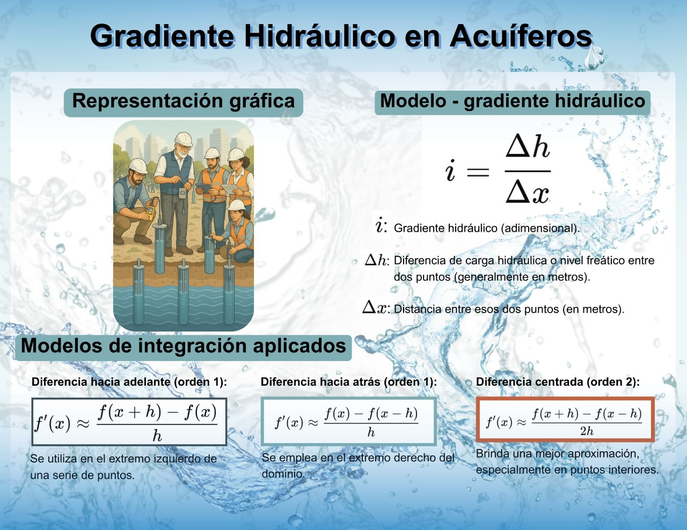Los acuíferos son formaciones geológicas subterráneas capaces de almacenar y transmitir agua. Constituyen una de las principales fuentes de abastecimiento para comunidades rurales y urbanas, sobre todo en regiones donde las fuentes superficiales son escasas o vulnerables. En Colombia, la presión sobre los acuíferos ha aumentado significativamente debido a la sobreexplotación, la contaminación agrícola e industrial y el crecimiento poblacional desorganizado.
Uno de los riesgos más importantes asociados al mal manejo de acuíferos es la migración de contaminantes, lo cual puede comprometer la calidad del agua subterránea y poner en riesgo la salud pública. Por ello, es fundamental contar con herramientas técnicas que permitan entender cómo se mueve el agua en el subsuelo, con el fin de diseñar estrategias de protección, monitoreo y remediación.
Modelado físico del flujo de agua en acuíferos
El nivel piezométrico es una medida del potencial hidráulico en un punto del acuífero. En términos prácticos, representa la altura hasta la cual el agua subiría en un tubo piezométrico insertado en el acuífero. Cuando se mide este nivel en varios puntos del terreno, se puede estimar cómo fluye el agua subterránea y en qué dirección.
El gradiente hidráulico es una magnitud que indica el cambio del nivel piezométrico con respecto a la distancia. Matemáticamente, se expresa como:
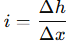Donde:
- i es el gradiente hidráulico (adimensional)
- Δh es la diferencia de nivel piezométrico entre dos puntos (metros).
- Δx es la distancia entre los dos puntos de medición (m).
Este gradiente es un componente clave en la Ley de Darcy, la cual modela el flujo de agua subterránea, y es esencial para calcular caudales, evaluar contaminaciones y diseñar obras hidráulicas como pozos o barreras hidráulicas.
Métodos de derivación numérica
En muchas ocasiones, los niveles piezométricos se obtienen de forma puntual en varios pozos distribuidos espacialmente, y no se cuenta con una función continua que describa el comportamiento del nivel del agua. Por eso, se utilizan métodos numéricos de derivación que permiten aproximar el gradiente hidráulico a partir de los datos discretos disponibles.
Los métodos más comunes son:
- Diferencia hacia adelante (orden 1): 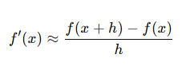
- Diferencia hacia atrás (orden 1): 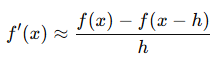
- Diferencia centrada (orden 2):
Se utiliza en el extremo izquierdo de una serie de puntos.
Se emplea en el extremo derecho del dominio
Brinda una mejor aproximación, especialmente en puntos interiores.
Cada uno de estos métodos tiene su campo de aplicación, dependiendo de la ubicación del punto de análisis dentro del dominio. Por ejemplo, el método centrado es más preciso pero solo puede usarse cuando se tienen datos a ambos lados del punto evaluado.
Estimación del Gradiente Hidráulico
En este estudio de caso vas a calcular la pendiente (gradiente hidráulico) del nivel freático de un acuífero, a partir de mediciones de nivel piezométrico en pozos.
¿Por qué? El gradiente hidráulico determina la velocidad y dirección del flujo subterráneo. Con él puedes diseñar pozos de extracción y barreras de contención, y proteger el suministro de agua.
¿Qué datos debes ingresar?
Una serie de pares de valores separados por comas y por línea, por ejemplo:
x₀, h₀
x₁, h₁
x₂, h₂
…
donde xᵢ es la distancia (m) entre pozos (por ejemplo, 0, 50, 100…) y
hᵢ es el nivel piezométrico (m sobre el nivel del mar) medido en cada pozo.
Métodos que aplicamos:
- Adelante en el primer punto
- Atrás en el último punto
- Centrado en los puntos intermedios
Ejemplo Práctico
En una zona costera, se instalan cinco pozos a lo largo de una línea recta perpendicular a la costa para monitorear el nivel freático. Las distancias desde el primer pozo son x = [0, 50, 100, 150, 200] metros.
Los niveles piezométricos medidos en metros sobre el nivel del mar son h = [12.5, 12.2, 11.8, 11.4, 11.1] metros.
Se debe calcular el gradiente hidráulico, es decir, la derivada de h respecto a x en cada punto utilizando diferenciación numérica.
Datos Del Problema
- Gradiente hidráulico pozo 1 (x = 0 m) Aplicamos diferencia hacia adelante
- Gradiente hidráulico pozo 2 (x = 50 m) Aplicamos diferencia hacia adelante, centrada y hacia atrás
- Diferencia hacia Adelante
- Diferencia Centrada
- Diferencia hacia Atrás
- Gradiente hidráulico pozo 3 (x = 100 m) Aplicamos diferencia hacia adelante, centrada y hacia atrás
- Diferencia hacia Adelante
- Diferencia Centrada
- Diferencia hacia Atrás
- Gradiente hidráulico pozo 4 (x = 150 m) Aplicamos diferencia hacia adelante, centrada y hacia atrás
- Diferencia hacia Adelante
- Diferencia Centrada
- Diferencia hacia Atrás
- Gradiente hidráulico pozo 5 (x = 200 m) Aplicamos diferencia hacia atrás
Para este caso no es aplicable diferencia hacia atrás y centrada ya que no tenemos información de un punto hacia atrás

Para este caso no es aplicable diferencia hacia adelante y centrada ya que no tenemos información de un punto hacia adelante
Gráfica de Resultados
En la gráfica anterior podemos observar que el gradiente hidráulico es mayor en los primeros pozos, lo que indica que el agua está fluyendo más rápidamente hacia la costa. Esto puede ser una señal de que el acuífero está siendo sobreexplotado o contaminado, y que se necesitan medidas de protección para asegurar un suministro de agua seguro y sostenible.
Programa
En este apartado puedes ingresar los datos obtenidos en el campo y calcular el gradiente hidráulico en cada pozo.
Una vez ingreses tus datos, haz clic en “Calcular Gradientes” para ver el resultado.
Ingresa datos en formato x,h por línea:
| x (m) | h (m) | Hacia Adelante | Hacia Atrás | Centrada |
|---|
¿Y ahora qué?
Una vez que has obtenido los gradientes hidráulicos en cada pozo, puedes:
-
Verificar el diseño de pozos de extracción:
Si los gradientes son muy altos (pendientes pronunciadas), el flujo subterráneo será más rápido, y quizá necesites acercar los pozos para captar todo el caudal antes de que el agua contaminada se desplace más allá de tu campo de pozos. -
Ajustar la orientación de barreras de contención:
Las barreras (muros cortafuego o zanjas impermeables) deben colocarse perpendiculares a la dirección de mayor gradiente para interceptar eficazmente el flujo subterráneo. -
Dimensionar tiempos de reacción y monitoreo:
Conociendo la pendiente y aplicando la ley de Darcy (v = −K·i), estimas la velocidad del agua y defines cada cuánto tiempo debes tomar muestras en pozos de vigilancia para detectar contaminantes. -
Validar cumplimiento normativo:
Algunos reglamentos establecen gradientes máximos permitidos para proteger acuíferos vulnerables; con tus valores, compruebas si el diseño actual cumple o requiere refuerzos.
En definitiva, estos gradientes no solo describen el perfil del acuífero, sino que guían todas las decisiones de ingeniería: ubicación y separación de pozos, diseño de barreras y estrategias de monitoreo para garantizar un suministro de agua seguro y sostenible.
Importancia del análisis numérico en el estudio de acuíferos
Los métodos numéricos de derivadas finitas permiten trabajar con datos reales tomados de campo sin necesidad de recurrir a modelos complejos. Su aplicación es especialmente útil cuando se cuenta con pocos datos, como ocurre comúnmente en proyectos de ingeniería ambiental o hidrogeología. Además, estas herramientas facilitan la simulación del comportamiento del acuífero ante distintas condiciones, lo que resulta clave para una gestión sostenible de los recursos hídricos subterráneos.
En contextos rurales colombianos, donde los acuíferos son la principal fuente de agua, contar con técnicas como esta puede marcar la diferencia entre un abastecimiento seguro o un riesgo sanitario.
Conclusión
El uso de derivadas finitas para estimar el gradiente hidráulico es una herramienta sencilla, pero poderosa, que permite entender cómo se mueve el agua en el subsuelo a partir de datos de campo. Su aplicación es clave para evaluar riesgos, planificar intervenciones y diseñar soluciones sostenibles frente a la contaminación y sobreexplotación de acuíferos. Este enfoque demuestra cómo la matemática aplicada, específicamente el análisis numérico, puede convertirse en un aliado fundamental en la protección del agua y el bienestar de las comunidades.
Tablas Comparativas de los diferentes métodos